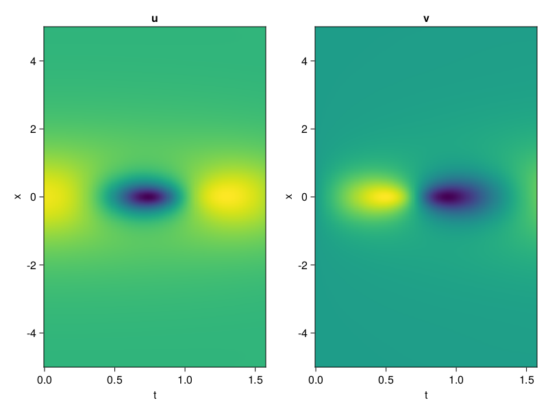
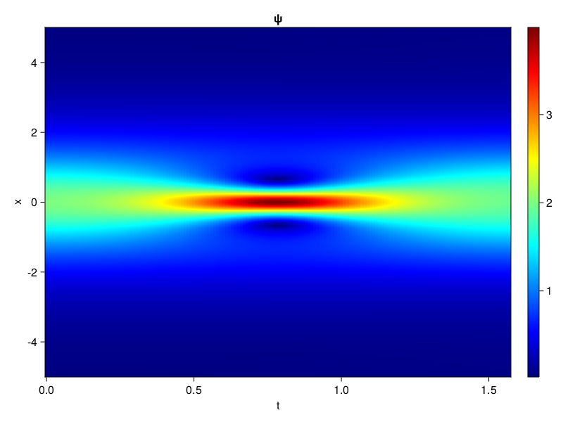
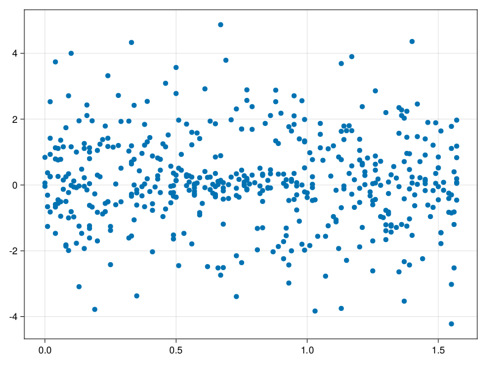

Schrödinger equation
The nonlinear Shrödinger equation is given by
\[\mathrm{i} \partial_t \psi=-\frac{1}{2} \sigma \partial_{x x} \psi-\beta|\psi|^2 \psi\]
Let $\sigma=\beta=1, \psi=u+v i$, the equation can be transformed into a system of partial differential equations
using ModelingToolkit, IntervalSets, Sophon, CairoMakie
using Optimization, OptimizationOptimJL
@parameters x,t
@variables u(..), v(..)
Dₜ = Differential(t)
Dₓ² = Differential(x)^2
eqs=[Dₜ(u(x,t)) ~ -Dₓ²(v(x,t))/2 - (abs2(v(x,t)) + abs2(u(x,t))) * v(x,t),
Dₜ(v(x,t)) ~ Dₓ²(u(x,t))/2 + (abs2(v(x,t)) + abs2(u(x,t))) * u(x,t)]
bcs = [u(x, 0.0) ~ 2sech(x),
v(x, 0.0) ~ 0.0,
u(-5.0, t) ~ u(5.0, t),
v(-5.0, t) ~ v(5.0, t)]
domains = [x ∈ Interval(-5.0, 5.0),
t ∈ Interval(0.0, π/2)]
@named pde_system = PDESystem(eqs, bcs, domains, [x,t], [u(x,t),v(x,t)])\[ \begin{align} \frac{\mathrm{d}}{\mathrm{d}t} u\left( x, t \right) =& - \frac{1}{2} \frac{\mathrm{d}}{\mathrm{d}x} \frac{\mathrm{d}}{\mathrm{d}x} v\left( x, t \right) - \left( \left|u\left( x, t \right)\right|^{2} + \left|v\left( x, t \right)\right|^{2} \right) v\left( x, t \right) \\ \frac{\mathrm{d}}{\mathrm{d}t} v\left( x, t \right) =& \frac{1}{2} \frac{\mathrm{d}}{\mathrm{d}x} \frac{\mathrm{d}}{\mathrm{d}x} u\left( x, t \right) + \left( \left|u\left( x, t \right)\right|^{2} + \left|v\left( x, t \right)\right|^{2} \right) u\left( x, t \right) \end{align} \]
pinn = PINN(u = Siren(2,1; hidden_dims=16,num_layers=4, omega = 1.0),
v = Siren(2,1; hidden_dims=16,num_layers=4, omega = 1.0))
sampler = QuasiRandomSampler(500, (200,200,20,20))
strategy = NonAdaptiveTraining(1,(10,10,1,1))
prob = Sophon.discretize(pde_system, pinn, sampler, strategy)OptimizationProblem. In-place: true
u0: ComponentVector{Float64}(u = (layer_1 = (weight = [0.009547173976898193 -0.3547407388687134; 0.054493069648742676 0.3423299789428711; … ; -0.27436572313308716 0.023062407970428467; 0.08388280868530273 -0.3478248715400696], bias = [0.0; 0.0; … ; 0.0; 0.0;;]), layer_2 = (weight = [0.2458599954843521 0.12675970792770386 … -0.017257094383239746 0.14030210673809052; 0.4446521997451782 -0.5464633107185364 … -0.5684778094291687 0.056735388934612274; … ; -0.48385629057884216 0.3247261345386505 … -0.019861387088894844 0.4980631470680237; 0.43292132019996643 0.19713859260082245 … 0.115757517516613 -0.29711318016052246], bias = [0.0; 0.0; … ; 0.0; 0.0;;]), layer_3 = (weight = [0.2692970037460327 -0.1443677842617035 … -0.24816812574863434 0.4035108685493469; -0.13197223842144012 -0.41191497445106506 … -0.28268370032310486 0.2652771770954132; … ; 0.10335429757833481 -0.3491504192352295 … 0.44934526085853577 0.4909239113330841; 0.19777508080005646 -0.08247747272253036 … -0.4922633171081543 0.12878912687301636], bias = [0.0; 0.0; … ; 0.0; 0.0;;]), layer_4 = (weight = [0.07922983169555664 0.600806474685669 … 0.15858682990074158 0.3631652593612671; 0.35302096605300903 0.40395405888557434 … 0.3201327919960022 0.037349455058574677; … ; -0.28728803992271423 0.2771895229816437 … -0.23420648276805878 0.0550883524119854; 0.3188956677913666 0.21814273297786713 … -0.2935965955257416 -0.08204749971628189], bias = [0.0; 0.0; … ; 0.0; 0.0;;]), layer_5 = (weight = [-0.263760507106781 0.2097092717885971 … 0.5591140985488892 0.42455917596817017], bias = [0.0;;])), v = (layer_1 = (weight = [-0.3139715790748596 0.00035256147384643555; -0.10742354393005371 -0.36911147832870483; … ; 0.1938299536705017 0.3922017216682434; 0.13132256269454956 0.4204953908920288], bias = [0.0; 0.0; … ; 0.0; 0.0;;]), layer_2 = (weight = [0.015112048014998436 0.38749200105667114 … -0.46701449155807495 0.4066193699836731; 0.5892317295074463 0.3425097167491913 … -0.39234456419944763 -0.5894777178764343; … ; 0.5644583702087402 0.29649531841278076 … 0.12447567284107208 0.18083511292934418; -0.03049069456756115 -0.5813149213790894 … 0.1248609647154808 -0.5141412615776062], bias = [0.0; 0.0; … ; 0.0; 0.0;;]), layer_3 = (weight = [-0.5211900472640991 -0.05217095836997032 … 0.12625499069690704 0.32242244482040405; 0.2349010854959488 -0.2455533891916275 … 0.32350191473960876 -0.2407711297273636; … ; 0.5479759573936462 -0.295930951833725 … -0.6115669012069702 -0.45921462774276733; -0.2823215425014496 -0.5014457702636719 … 0.34019988775253296 -0.04392854869365692], bias = [0.0; 0.0; … ; 0.0; 0.0;;]), layer_4 = (weight = [-0.4065280556678772 -0.4191654622554779 … -0.11204150319099426 -0.46850496530532837; -0.016232606023550034 0.38440051674842834 … 0.3516260087490082 0.12018543481826782; … ; -0.47631534934043884 -0.21280311048030853 … -0.0543895922601223 0.129068061709404; 0.08400376886129379 -0.24594460427761078 … -0.5709084272384644 0.23718783259391785], bias = [0.0; 0.0; … ; 0.0; 0.0;;]), layer_5 = (weight = [0.04132213816046715 0.5967350602149963 … 0.2869807183742523 0.29679131507873535], bias = [0.0;;])))Now we train the neural nets and resample data while training.
function train(pde_system, prob, sampler, strategy, resample_period = 500, n=10)
bfgs = BFGS()
res = Optimization.solve(prob, bfgs; maxiters=2000)
for i in 1:n
data = Sophon.sample(pde_system, sampler)
prob = remake(prob; u0=res.u, p=data)
res = Optimization.solve(prob, bfgs; maxiters=resample_period)
end
return res
end
res = train(pde_system, prob, sampler, strategy)u: ComponentVector{Float64}(u = (layer_1 = (weight = [-0.39271244228088337 -0.21779607571826096; 0.14136257377700873 0.8325002348791988; … ; -0.3765927704696085 0.2296317081872304; 0.21229299961109624 -0.260424979414733], bias = [0.12421160571960391; -0.2879479915968602; … ; -0.1794584396561213; 0.08925077981767998;;]), layer_2 = (weight = [-0.007272070164049434 0.5298599084656067 … 0.064963459966701 -0.12476886599860863; 0.6858287162992314 -0.8758355489293638 … -0.6611496187104355 0.32751592840061494; … ; -0.617332042528606 0.19248057702798174 … -0.17900035421409036 0.6129045765525268; 0.405086871619148 0.3186117966042466 … 0.3504055006597985 -0.5053891630402116], bias = [0.1716435304799249; 0.033567429757222454; … ; 0.10847373779116917; 0.014673682600925546;;]), layer_3 = (weight = [-0.3656652201669344 -0.3251053942128853 … -0.4133456926109114 0.6393787457605217; -0.3093719087809945 -0.5634023800909146 … -0.1915674769970609 0.27862754809146656; … ; 0.23007646969947837 -0.24679693780071657 … 0.16236538560969302 0.5182780011404742; -0.09713425105295993 0.2176522230516744 … -0.3476770129165541 0.1621575026572372], bias = [-0.03934744752751549; -0.0749532281512307; … ; 0.09291699911526452; 0.25467975313030866;;]), layer_4 = (weight = [0.5053037651772945 0.8603399644304262 … 0.34927010359085964 0.325295149003974; 0.20706973585349922 0.4756438100921451 … 0.1870247412956204 0.024123959224322748; … ; -0.22341620183836702 0.14798958712466634 … 0.18578993433377214 -0.022419294746393308; 0.17604677385022405 -0.08280902613684278 … -0.8721603792865861 -0.056942399032330566], bias = [0.19219033330284624; 0.0313039384689579; … ; 0.08124064781729255; -0.26409863384726073;;]), layer_5 = (weight = [-0.7628463132585842 0.45829520896579695 … 0.3446497675879089 0.5197010447991998], bias = [0.09058135061626031;;])), v = (layer_1 = (weight = [-0.37137442426584855 0.275756384062575; -0.07394455080849557 -0.9067587160065825; … ; 0.5240086045696055 0.7876169630822768; -0.07516471984662024 0.15725019352458325], bias = [-0.20335172121466258; -0.33083238186349156; … ; -0.2132719796001916; -0.12529291529318332;;]), layer_2 = (weight = [0.18213151011852285 0.3248144528207353 … -0.3979047623215283 0.6246042076142959; 0.7692011184395825 0.3404643538577426 … -0.41613980060381317 -0.36743422386178515; … ; 0.5730217023891121 0.2843276760128071 … 0.452139138194279 0.16801989454960278; 0.18479727483094496 -0.3854162242243177 … 0.17899482558060867 -0.5329559014985692], bias = [-0.01900721482356331; 0.009738298902789055; … ; -0.21897230374614116; 0.05030632459668414;;]), layer_3 = (weight = [-0.4794228804265643 0.05048659754635697 … 0.08324086603392787 0.4888596816146643; 0.27025685297623436 -0.1627391300493552 … 0.263232395305907 -0.003469083679851473; … ; 0.4811312901935211 -0.5257016890644489 … -0.6687836300642942 -0.42367207007885693; -0.36079470280324305 -0.5771855073250479 … 0.3473258743795313 0.06321342240944104], bias = [0.08266364512822189; 0.2863545750585695; … ; 0.0009798046155924918; -0.33047760097573425;;]), layer_4 = (weight = [-0.46596056483939113 -0.3583217632044424 … 0.17529310109536914 -0.4411074870826909; -0.4685259611948797 0.4173041106221537 … 0.4934039076416943 0.36778787856617334; … ; -0.44693392094666634 -0.2523800241361439 … 0.08323387803406705 0.18915964903417243; 0.11765157353835191 -0.26346397898130725 … -0.5080743717887081 0.14768658130260484], bias = [0.09994017996608107; -0.34433946597980575; … ; -0.2239148129173283; -0.12827869128369812;;]), layer_5 = (weight = [0.5530162947807556 0.889104469527594 … 0.35813961284745804 -0.027752394899641118], bias = [0.24441307870691953;;])))phi = pinn.phi
ps = res.u
xs, ts= [infimum(d.domain):0.01:supremum(d.domain) for d in pde_system.domain]
u = [sum(phi.u(([x,t]), ps.u)) for x in xs, t in ts]
v = [sum(phi.v(([x,t]), ps.v)) for x in xs, t in ts]
ψ = @. sqrt(u^2+ v^2)
axis = (xlabel="t", ylabel="x", title="u")
fig, ax1, hm1 = heatmap(ts, xs, u', axis=axis)
ax2, hm2= heatmap(fig[1, end+1], ts, xs, v', axis= merge(axis, (; title="v")))
display(fig)
axis = (xlabel="t", ylabel="x", title="ψ")
fig, ax1, hm1 = heatmap(ts, xs, ψ', axis=axis, colormap=:jet)
Colorbar(fig[:, end+1], hm1)
display(fig)
Customize Sampling
Bascially any sampling method is supportted. For example we can sample data according to the predicted solution.
using StatsBase
data = vec([[x, t] for x in xs, t in ts])
wv = vec(ψ)
new_data = wsample(data, wv, 500)
new_data = reduce(hcat, new_data)
fig, ax = scatter(new_data[2,:], new_data[1,:])
prob.p[1] = new_data
prob.p[2] = new_data
prob = remake(prob; u0 = res.u)
# res = Optimization.solve(prob, bfgs; maxiters=1000)OptimizationProblem. In-place: true
u0: ComponentVector{Float64}(u = (layer_1 = (weight = [-0.39271244228088337 -0.21779607571826096; 0.14136257377700873 0.8325002348791988; … ; -0.3765927704696085 0.2296317081872304; 0.21229299961109624 -0.260424979414733], bias = [0.12421160571960391; -0.2879479915968602; … ; -0.1794584396561213; 0.08925077981767998;;]), layer_2 = (weight = [-0.007272070164049434 0.5298599084656067 … 0.064963459966701 -0.12476886599860863; 0.6858287162992314 -0.8758355489293638 … -0.6611496187104355 0.32751592840061494; … ; -0.617332042528606 0.19248057702798174 … -0.17900035421409036 0.6129045765525268; 0.405086871619148 0.3186117966042466 … 0.3504055006597985 -0.5053891630402116], bias = [0.1716435304799249; 0.033567429757222454; … ; 0.10847373779116917; 0.014673682600925546;;]), layer_3 = (weight = [-0.3656652201669344 -0.3251053942128853 … -0.4133456926109114 0.6393787457605217; -0.3093719087809945 -0.5634023800909146 … -0.1915674769970609 0.27862754809146656; … ; 0.23007646969947837 -0.24679693780071657 … 0.16236538560969302 0.5182780011404742; -0.09713425105295993 0.2176522230516744 … -0.3476770129165541 0.1621575026572372], bias = [-0.03934744752751549; -0.0749532281512307; … ; 0.09291699911526452; 0.25467975313030866;;]), layer_4 = (weight = [0.5053037651772945 0.8603399644304262 … 0.34927010359085964 0.325295149003974; 0.20706973585349922 0.4756438100921451 … 0.1870247412956204 0.024123959224322748; … ; -0.22341620183836702 0.14798958712466634 … 0.18578993433377214 -0.022419294746393308; 0.17604677385022405 -0.08280902613684278 … -0.8721603792865861 -0.056942399032330566], bias = [0.19219033330284624; 0.0313039384689579; … ; 0.08124064781729255; -0.26409863384726073;;]), layer_5 = (weight = [-0.7628463132585842 0.45829520896579695 … 0.3446497675879089 0.5197010447991998], bias = [0.09058135061626031;;])), v = (layer_1 = (weight = [-0.37137442426584855 0.275756384062575; -0.07394455080849557 -0.9067587160065825; … ; 0.5240086045696055 0.7876169630822768; -0.07516471984662024 0.15725019352458325], bias = [-0.20335172121466258; -0.33083238186349156; … ; -0.2132719796001916; -0.12529291529318332;;]), layer_2 = (weight = [0.18213151011852285 0.3248144528207353 … -0.3979047623215283 0.6246042076142959; 0.7692011184395825 0.3404643538577426 … -0.41613980060381317 -0.36743422386178515; … ; 0.5730217023891121 0.2843276760128071 … 0.452139138194279 0.16801989454960278; 0.18479727483094496 -0.3854162242243177 … 0.17899482558060867 -0.5329559014985692], bias = [-0.01900721482356331; 0.009738298902789055; … ; -0.21897230374614116; 0.05030632459668414;;]), layer_3 = (weight = [-0.4794228804265643 0.05048659754635697 … 0.08324086603392787 0.4888596816146643; 0.27025685297623436 -0.1627391300493552 … 0.263232395305907 -0.003469083679851473; … ; 0.4811312901935211 -0.5257016890644489 … -0.6687836300642942 -0.42367207007885693; -0.36079470280324305 -0.5771855073250479 … 0.3473258743795313 0.06321342240944104], bias = [0.08266364512822189; 0.2863545750585695; … ; 0.0009798046155924918; -0.33047760097573425;;]), layer_4 = (weight = [-0.46596056483939113 -0.3583217632044424 … 0.17529310109536914 -0.4411074870826909; -0.4685259611948797 0.4173041106221537 … 0.4934039076416943 0.36778787856617334; … ; -0.44693392094666634 -0.2523800241361439 … 0.08323387803406705 0.18915964903417243; 0.11765157353835191 -0.26346397898130725 … -0.5080743717887081 0.14768658130260484], bias = [0.09994017996608107; -0.34433946597980575; … ; -0.2239148129173283; -0.12827869128369812;;]), layer_5 = (weight = [0.5530162947807556 0.889104469527594 … 0.35813961284745804 -0.027752394899641118], bias = [0.24441307870691953;;])))